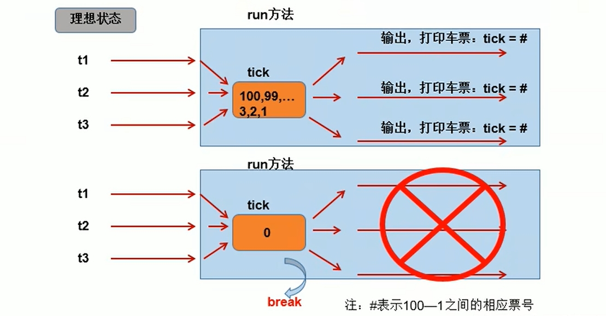
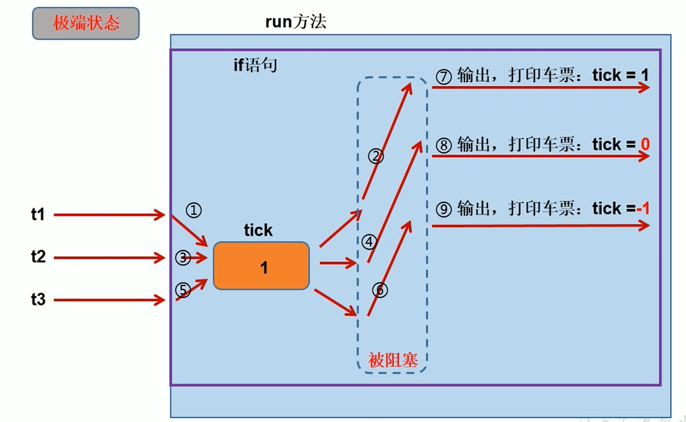

有關創建多執行緒的方式 - 繼承 Thread類，可以參考我的另一篇文章 Java - Thread 執行緒(一)
除了上述說的這個方式創建執行緒，更好的方式是透過實現 interface Runnable 來做
interface Runnable 的類別run()建構子中start()[註] 以下的例子為非thread-safety，還必須優化；下面會介紹兩個優化方法
/**
* 售票窗口類
*/
class Window implements Runnable {
private int ticketAmount = 20;
@Override
public void run() {
while (true) {
if (ticketAmount > 0) {
// 進行賣票操作
System.out.println(Thread.currentThread().getName() + " : 售出票號 - " + ticketAmount);
ticketAmount--;
} else {
break;
}
}
}
}
/**
* 測試類
* @author sunwc
* @create 2023-03-23 下午 03:01
*/
public class ImplementsRunnableTest {
public static void main(String[] args) {
Window window = new Window();
Thread t1 = new Thread(window);
t1.setName("Window 1");
Thread t2 = new Thread(window);
t2.setName("Window 2");
Thread t3 = new Thread(window);
t3.setName("Window 3");
t1.start();
t2.start();
t3.start();
}
}
輸出結果：
Window 1 : 售出票號 - 20
Window 1 : 售出票號 - 19
Window 1 : 售出票號 - 18
Window 3 : 售出票號 - 20
Window 2 : 售出票號 - 20
Window 3 : 售出票號 - 16
Window 1 : 售出票號 - 17
Window 3 : 售出票號 - 14
Window 2 : 售出票號 - 15
Window 1 : 售出票號 - 13
Window 1 : 售出票號 - 10
Window 2 : 售出票號 - 11
Window 2 : 售出票號 - 8
Window 3 : 售出票號 - 12
Window 2 : 售出票號 - 7
Window 1 : 售出票號 - 9
Window 1 : 售出票號 - 4
Window 2 : 售出票號 - 5
Window 3 : 售出票號 - 6
Window 2 : 售出票號 - 2
Window 1 : 售出票號 - 3
Window 3 : 售出票號 - 1
開發中優先選擇 實現 interface Runnable 方式
原因：
沒有類別單一繼承的侷限性共享資料的情況其實原生的 Thread類別 也是實現 interface Runnable 的例子，
所以不管是子類繼承 Thread 類 或 實現類實現 interface Runnable ，相同點是：
需要覆寫 run()，將執行緒要執行的邏輯寫在 run() 中
執行緒安全問題，問題點解釋：

現實例子：
當某A在使用唯一一間廁所時，某B即使肚子痛要使用，也要等某A使用完才可以進入。因為某A鎖門了，某B只好等了
在Java中，我們通過同步機制，來解決執行緒安全的問題
synchronized(同步監視器) {
// 需要被同步的程式
}
說明：
操作共享資料的程式，即為需要被同步的程式
共享資料：多個執行緒共同操作的一個變數。以例子來說 ticketAmount 就是共享的資料
同步監視器，俗稱：鎖。任何一個類別的物件都可以充當鎖
要求：多個執行緒必須要共用同一把鎖
侷限性：操作同步程式區塊時，只能有一個執行緒參與，其它執行緒等待。相當於是一個單執行緒的過程，效率低
例子如下：
/**
* 售票窗口類
*/
class Window implements Runnable {
private int ticketAmount = 20;
@Override
public void run() {
while(true) {
// 同步程式區塊 - Window.class(當前類別)充當唯一一把鎖
// 因為類別只會加載一次，當作唯一鎖相對安全
// 用this的話要看這個類別在主執行緒(main方法)中new了幾個物件
// 若只有一個就可以用this當唯一鎖
synchronized (Window.class) { // 或 synchronized (this)
if (ticketAmount > 0) {
// 執行緒阻塞，提高執行緒不安全機率
try {
Thread.sleep(100);
} catch (InterruptedException e) {
e.printStackTrace();
}
// 進行賣票操作
System.out.println(Thread.currentThread().getName() + " : 售出票號 - " + ticketAmount);
ticketAmount--;
} else {
break;
}
}
}
}
}
輸出結果：
Window 1 : 售出票號 - 20
Window 1 : 售出票號 - 19
Window 1 : 售出票號 - 18
Window 1 : 售出票號 - 17
Window 1 : 售出票號 - 16
Window 1 : 售出票號 - 15
Window 1 : 售出票號 - 14
Window 3 : 售出票號 - 13
Window 2 : 售出票號 - 12
Window 2 : 售出票號 - 11
Window 2 : 售出票號 - 10
Window 2 : 售出票號 - 9
Window 2 : 售出票號 - 8
Window 2 : 售出票號 - 7
Window 2 : 售出票號 - 6
Window 3 : 售出票號 - 5
Window 3 : 售出票號 - 4
Window 1 : 售出票號 - 3
Window 1 : 售出票號 - 2
Window 1 : 售出票號 - 1
若操作共享資料的程式完整的寫在一個方法中，我們不妨將此方法宣告成同步的
例子如下：
/**
* 售票窗口類
*/
class Window implements Runnable {
private static int ticketAmount = 20;
@Override
public void run() {
while (ticketAmount > 0) {
// 售票
sellTicket();
}
}
// private synchronized void sellTicket() {// 默認使用this當作鎖
private static synchronized void sellTicket() { // 默認使用Window.class當鎖
if (ticketAmount > 0) {
// 執行緒阻塞，提高執行緒不安全機率
try {
Thread.sleep(100);
} catch (InterruptedException e) {
e.printStackTrace();
}
// 進行賣票操作
System.out.println(Thread.currentThread().getName() + " : 售出票號 - " + ticketAmount);
ticketAmount--;
}
}
}
輸出結果：
Window 1 : 售出票號 - 20
Window 1 : 售出票號 - 19
Window 1 : 售出票號 - 18
Window 3 : 售出票號 - 17
Window 3 : 售出票號 - 16
Window 3 : 售出票號 - 15
Window 3 : 售出票號 - 14
Window 3 : 售出票號 - 13
Window 3 : 售出票號 - 12
Window 3 : 售出票號 - 11
Window 3 : 售出票號 - 10
Window 3 : 售出票號 - 9
Window 3 : 售出票號 - 8
Window 3 : 售出票號 - 7
Window 2 : 售出票號 - 6
Window 2 : 售出票號 - 5
Window 2 : 售出票號 - 4
Window 2 : 售出票號 - 3
Window 2 : 售出票號 - 2
Window 2 : 售出票號 - 1